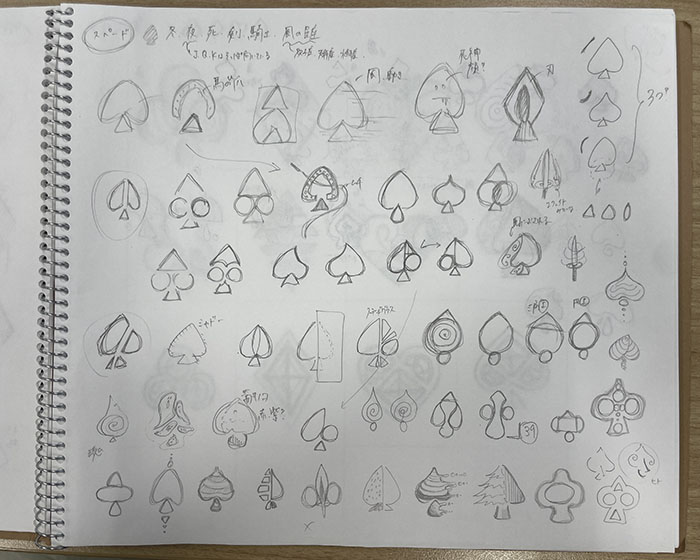

トランプマークデザイン
授業で、ハート・クラブ・ダイア・スペードの4つのトランプマークを制作しました。

クライアント
-----
担当した作業
-----
制作期間
2024.6.9 - 7.13
使用したソフトなど
Adobe Illustrator
注意・工夫した点
それぞれ統一感のあるマークにしたかったので、同じ要素を入れたり、線の太さを揃えるなどの工夫をしました。 秋の意味があるハートはりんご、春の意味があるクラブは植物、夏の意味があるダイアは線香花火、冬の意味があるスペー ドはつららから連想させた雫をモチーフにしています。
課題
完成後、先生に添削をお願いした際に、 「① 伝統的 or 先進的がどちらかというと先進的に見える。」とご指摘を頂き、確 かに先進的だなと感じました。モチーフは伝統的で作っていても、第三者がみるこのマークの第一印象は先進的に見えるこ とがあることに注意して制作しないといけないと学びました。これからはデザインを見たり受け取る人をより意識して制作 に取り組むことを心がけようと思いました。